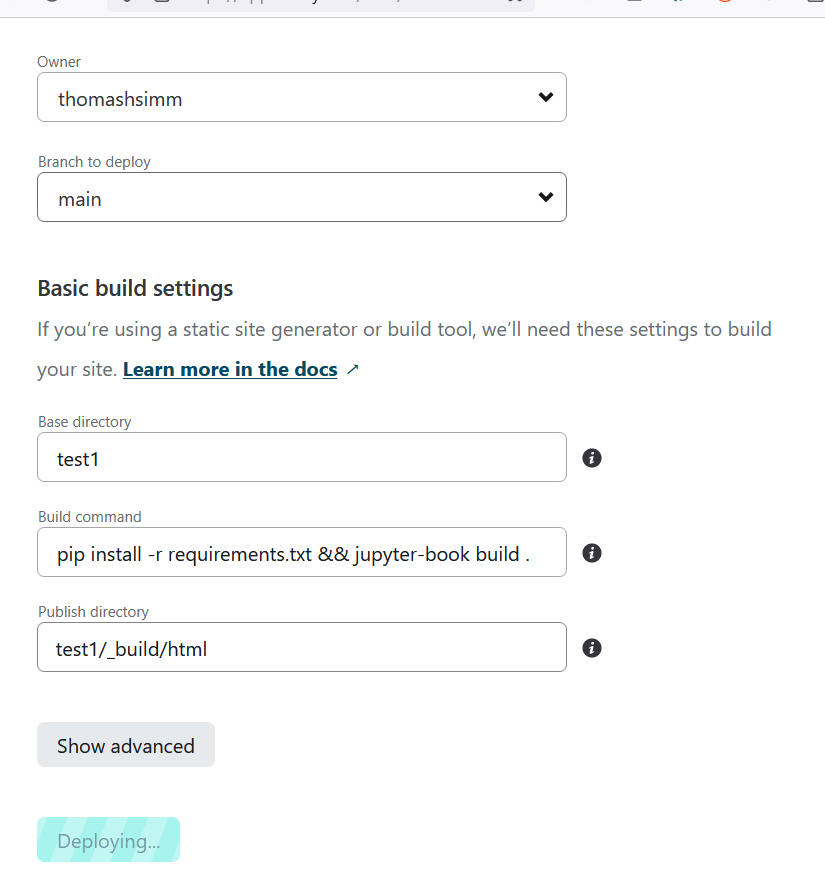

Communicating code: Website
Using the notebook format for a website

What I have used to convert notebooks to html
- fastpages
- Previously I converted notebooks to html via fastpages but this is now deprecated and they are recommending the use of quarto.
- quarto
- So far I have found quarto really good and flexible (N.B. R works too)
- Easy to convert a notebook to multiple formats, including html, powerpoint, pdf, word doc
- BUT Quarto is not possible if installing from non pip sources is an issue (as far as I can tell currently)
- nbconvert is another option I tried
- but it doesn’t seem to have the functionality of fastpages or quarto.
- Jupyter Books seems to be the best option within companies with installation issues
- Maybe not as good as quarto but it works!
Others
- I know some people use Sphinx,
- is recommended by QA
- From what I can tell sphinx on it’s own is not as easy to use as notebooks
- But there is a jupyter extension nbsphinx
- Jupyter Books uses Sphinx heavily under the hood
- nbdev
- I think is connected to quarto
- Voila
- Voilà turns Jupyter notebooks into standalone web applications.
- Looks good, bit like streamlit
- but seems to interfere with other libraries
- mercury seems similar
Creating html (& other formats)
Quarto
Installation is via a package i.e. .msi for Windows or .pkg for Mac. Which can cause issues.
Works with both ipynb and qmd files, which are both a mixture of markdown and executable code.
The only thing that needs to be done with the notebook is add a YAML block at the start of the notebook, like the following (raq not markdown was used):
---
title: "Communicating code: Website"
subtitle: "Using the notebook format for a website"
author: "Thomas H. Simm"
format:
html:
toc: true
title-slide-attributes:
data-background-size: contain
data-background-opacity: "0.5"
jupyter: python3
---We can create different files from this .ipynb Jupyter notebook using the following code:
quarto render testPres.ipynb --to pptxquarto render testPres.ipynb --to pdfquarto render testPres.ipynb --to htmlquarto render testPres.ipynb --to revealjs
Further, formatting for projects (i.e. for website) can be done within the configuration file _quarto.yml
project:
type: website
output-dir: _site
website:
title: "ThomasHSimm"
favicon: /posts/Picture3.png
body-header: <img src="/posts/header2.png" height=200>
navbar:
right:
- about.qmd
- icon: github
href: https://github.com/ThomasHSimm
- icon: mortarboard-fill
href: https://scholar.google.com/citations?hl=en&user=HdPDn1sAAAAJ
format:
html:
theme:
light: flatly
dark: darkly
css: styles.cssJupyter Books
We can create different files from this .ipynb Jupyter notebook using the following code:
jupyter-book build .\PesticideDocs\jupyter-book build <path-to-book>jupyter-book build <path-to-book> --builder pdfhtmljupyter-book build <path-to-book> --builder singlehtml
The only difference in notebook is that it needs to have One header in a markdown cell for the table of contents, e.g.
# Title of page
Configuration file
A seperate files _config.yml is used to define how the html (or other) files will look
# Book settings
# Learn more at https://jupyterbook.org/customize/config.html
title: Defra Pesticide Testing, Data Analysis
author: Thomas Simm
logo: ONS-logo.png
exclude_patterns: [_build, Thumbs.db, .DS_Store, "**.ipynb_checkpoints"]
# Force re-execution of notebooks on each build.
# See https://jupyterbook.org/content/execute.html
execute:
execute_notebooks: force
# Define the name of the latex output file for PDF builds
latex:
latex_documents:
targetname: book.tex
# Add a bibtex file so that we can create citations
bibtex_bibfiles:
- references.bib
# Information about where the book exists on the web
repository:
url: https://github.com/ThomasHSimm/Pesticide # Online location of your book
path_to_book: docs # Optional path to your book, relative to the repository root
branch: master # Which branch of the repository should be used when creating links (optional)
# Add GitHub buttons to your book
# See https://jupyterbook.org/customize/config.html#add-a-link-to-your-repository
# HTML-specific settings
html:
favicon : "_images/favicon.jpg" # A path to a favicon image
use_edit_page_button : false # Whether to add an "edit this page" button to pages. If `true`, repository information in repository: must be filled in
use_repository_button : false # Whether to add a link to your repository button
use_issues_button : false # Whether to add an "open an issue" button
use_multitoc_numbering : true # Continuous numbering across parts/chapters
extra_navbar : Powered by <a href="https://jupyterbook.org">Jupyter Book</a>
<br>Home website <a href="https://thomashsimm.com/">thomashsimm.com</a> # Will be displayed underneath the left navbar.
extra_footer : "" # Will be displayed underneath the footer.
google_analytics_id : "" # A GA id that can be used to track book views.
home_page_in_navbar : true # Whether to include your home page in the left Navigation Bar
baseurl : "" # The base URL where your book will be hosted. Used for creating image previews and social links. e.g.: https://mypage.com/mybook/
comments:
hypothesis : false
utterances : false
announcement : "" # A banner announcement at the top of the site.
And in addition to the config file a table of contents file is required _toc.yml:
# Table of contents
# Learn more at https://jupyterbook.org/customize/toc.html
format: jb-book
root: intro
chapters:
- file: Pesticide_Plots
- file: References
- file: UK_areas
- file: using_jupyter_books
Creating a webpage from this
Takes about 30 mins including installing the chosen converter. (But can be done much quicker)
- create a Github repo for your website
- choose the converter (e.g. Jupyter Books)
- And follow their instructions
- go to settings -> Pages within the repo
- few options to do
- Optional: add your own website url to it
Link how to do this here
In Quarto a command from your PC in the repo, publishes the website:
quarto publish quarto-pub
Or equivalently with Jupyter Books:
ghp-import -n -p -f _build/html
Creating directly from the repo
If we instead want to convert notebook files directly from a repo to create a website then this can be done with Netlify.
This is useful if using Gitlab (i.e. not Github) or don’t want all the extra html files cluttering the repo.
Steps:
https://jupyterbook.org/en/stable/publish/netlify.html
- Sign up and connect Github/Gitlab
- Add a
requirements.txtfile and also toc.yml to directory - On netlify -> Add new site -> import from an existing repo
- Insert something like below
- N.B. the command:
pip install -r requirements.txt && jupyter-book build .- and folder location 
Example: